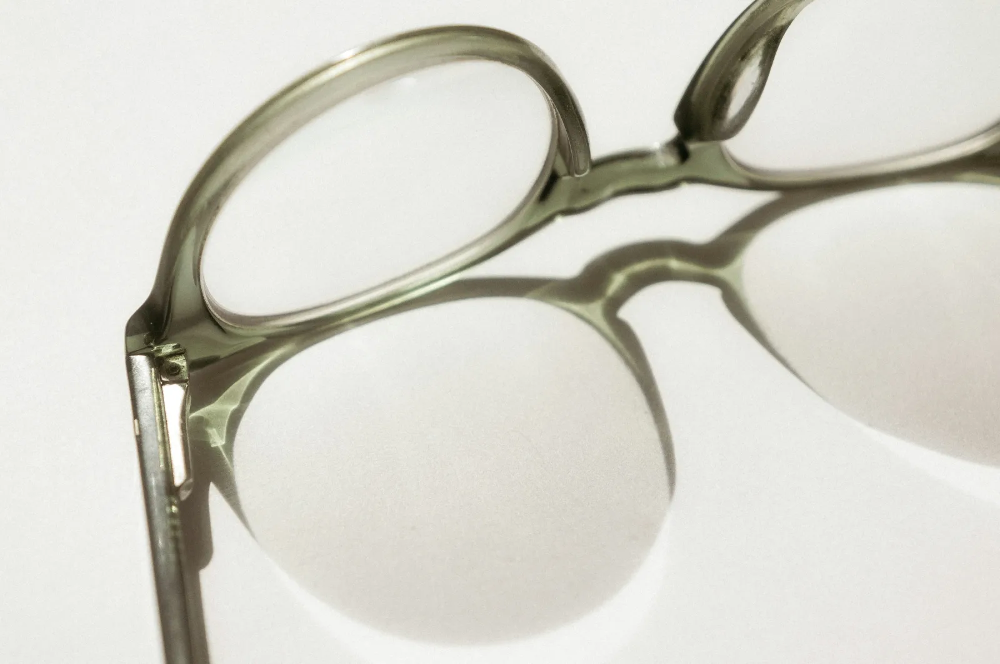
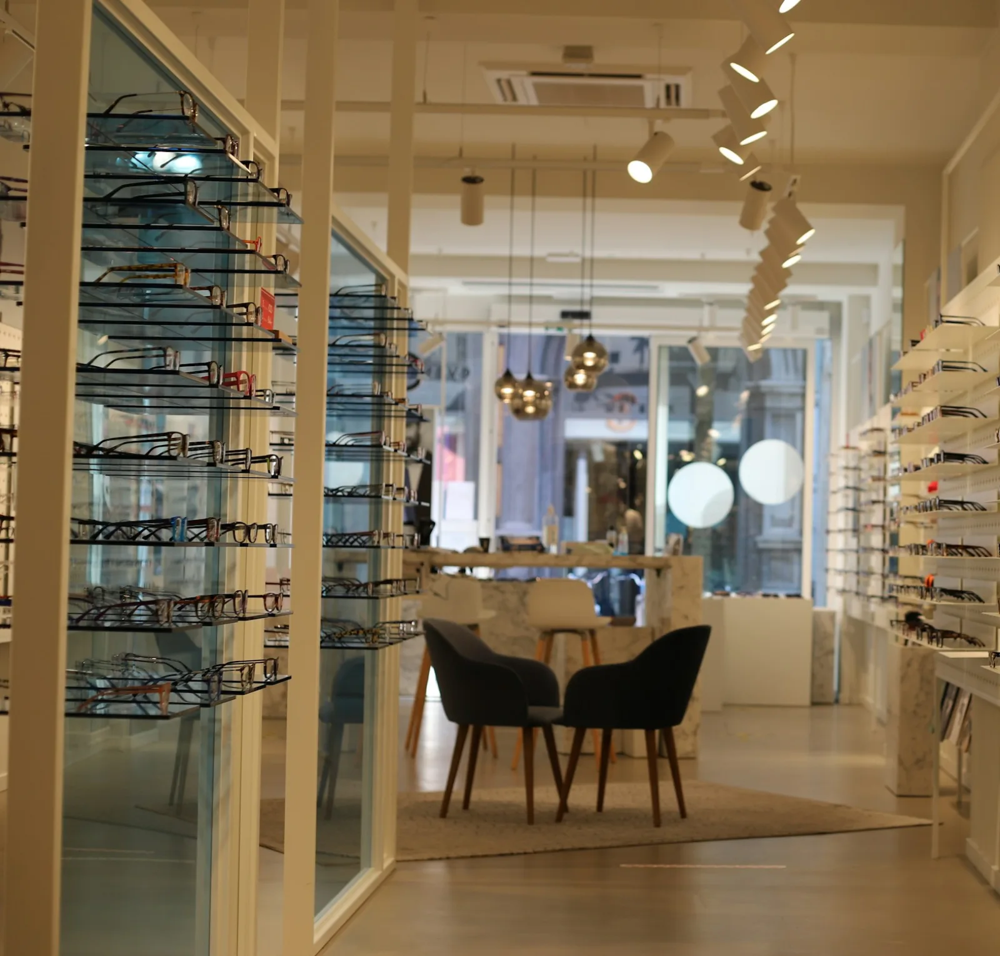
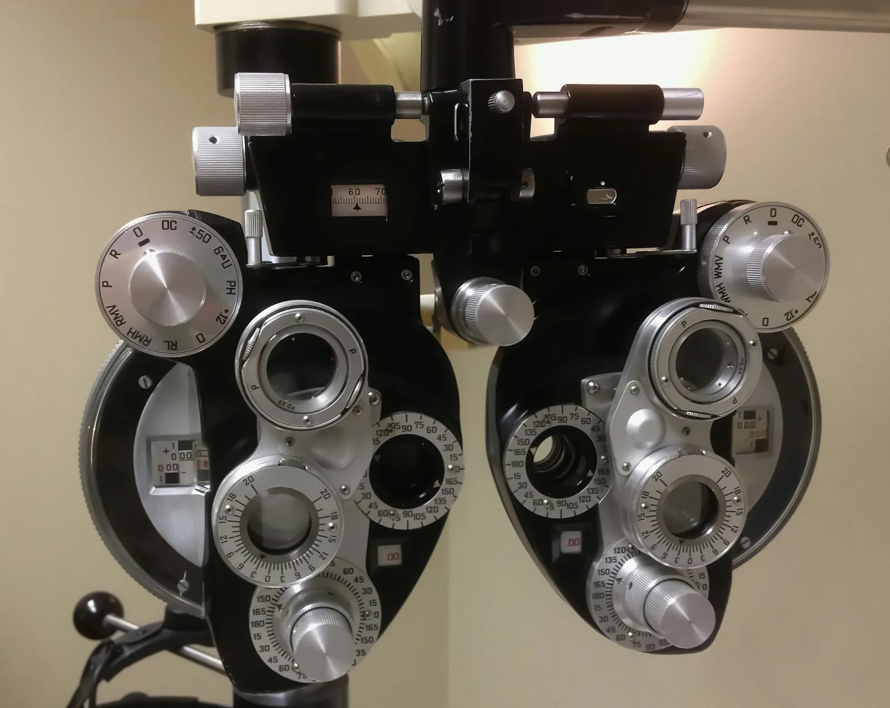

Brillenmanufaktur · Hamburg
Sehen.
Und gesehen werden.
Brillen aus Acetat und Titan, in kleinen Serien gefertigt und von Hand angepasst. Probieren Sie jede Fassung gleich hier an – mit der Kamera Ihres Handys oder Laptops.
Kollektion
Drei Formen,
ein Anspruch.
Jede Brille können Sie hier in 3D drehen, in allen Farben ansehen – und live aufsetzen.

Live-Anprobe
Aufsetzen,
bevor Sie kommen.
- 1 Kamera erlauben – am Handy die Selfie-Kamera, am Laptop die Webcam.
- 2 Die Brille sitzt sofort, auch wenn Sie den Kopf drehen. Modell, Farbe und Gläser wechseln.
- 3 Foto machen, speichern oder direkt an Freunde schicken.
Die Anprobe läuft vollständig auf Ihrem Gerät. Kein Kamerabild wird gespeichert oder übertragen – Fotos speichern oder teilen nur Sie selbst.

Manufaktur
Vom Block
zur Brille.
Unsere Fassungen entstehen aus Acetatplatten aus Italien und japanischem Titan. Gefräst, getrommelt, von Hand poliert – rund 60 Arbeitsschritte, bis eine Brille bei uns im Regal liegt.
Im Laden passen wir jede Fassung an: Bügellänge, Nasenauflage, Neigung. Damit sie sitzt, als wäre sie für Sie gemacht. Weil sie es ist.
- Arbeitsschritte
- 60
- Gewicht Titan
- 12 g
- Garantie
- 3 Jahre auf Fassungsbruch*
* Herstellergarantie; Ihre gesetzlichen Gewährleistungsrechte bleiben unberührt.
Augenoptik
Gut sehen
beginnt mit Zeit.
- Sehtest und Beratung45 Minuten · kostenlos
- Gleitsichtbrillenmit Vermessung der Augenposition
- KontaktlinsenAnpassung und Probetragen
- Sonnenbrillen in Sehstärkefür alle Fassungen
Hinweis: Der Sehtest beim Augenoptiker ersetzt keine augenärztliche Untersuchung.

Termin
Wir nehmen uns
eine Stunde für Sie.
- Laden
- Mühlenkamp, Hamburg-Winterhude
- Öffnungszeiten
- Di–Fr 10–19 Uhr · Sa 10–16 Uhr
- Telefon
- 040 000 000 00